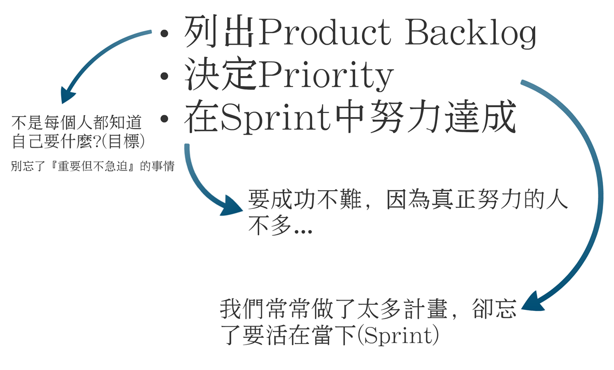

你只要堅持一天就好…
昨天去大學分享，跟同學們聊了很多，雖然大家都很 興奮開心，但時間一如往常的不夠用，有一張投影片，我沒時間講太多…
這是，我從Scrum學到的東西，Scrum告訴我們，把目標切成迭代(iteration)，搞清楚這個迭代你要實現什麼(Backlogs)，然後，暫且把雜事拋諸腦後，就衝刺好這個迭代就好。
昨天我說了很多，但，其實我想講的只有一句話：『你只要先堅持一天就好… 』 如果我要你每天都很賣力的衝刺，那確實很難，但如果我只要你堅持一天，就只有一天，我覺得你一定能做到。 要你馬上改變，奮發圖強一學期，肯定不容易，但，請先從一天開始。 選一天，好好的衝刺，享受一下努力後的果實，然後對得起自己的安心入睡。只要一天就好，如果你能過好一天，你就有機會過好一個禮拜。你能過好一個禮拜，你就有能力過好一個月。
有一天，當你習慣性地能夠好好過每一年，你將會有一輩子豐富的人生。 一切，其實都只是從過好『一天』開始。 先為自己訂個『一天』的目標，毋須遠大，不要張狂，然後在一周裡面選一天，用盡全力實現這個目標，享受屬於你的成果與獎勵，如果你愛上那一天當中成功的感覺，你自然會為自己訂下『下一個一天』。
成功不一定有什麼大方針大架構，就只是去過好每個一天而已。
聯絡:資訊
HTML元素是構建網站的基石。HTML允許嵌入圖像與物件，並且可以用於建立互動式表單，它被用來結構化資訊——例如標題、段落和列表等等，也可用來在一定程度上描述文件的外觀和語意。HTML的語言形式為尖括號包圍的HTML元素（如≶html>），瀏覽器使用HTML標籤和指令碼來詮釋網頁內容，但不會將它們顯示在頁面上。
JavaScript（通常縮寫為JS）是一種進階的、直譯的程式語言[5]。JavaScript是一門基於原型、函式先行的語言[6]，是一門多範式的語言，它支援物件導向編程，指令式程式設計，以及函式語言程式設計。它提供語法來操控文字、陣列、日期以及正規表示式等，不支援I/O，比如網路、儲存和圖形等，但這些都可以由它的宿主環境提供支援。它已經由ECMA（歐洲電腦製造商協會）透過ECMAScript實作語言的標準化[5]。它被世界上的絕大多數網站所使用，也被世界主流瀏覽器（Chrome、IE、Firefox、Safari、Opera）支援。
層疊樣式表（英語：Cascading Style Sheets，縮寫：CSS；又稱串樣式列表、級聯樣式表、串接樣式表、階層式樣式表）是一種用來為結構化文件（如HTML文件或XML應用）添加樣式（字型、間距和顏色等）的電腦語言，由W3C定義和維護。目前最新版本是CSS2.1，為W3C的推薦標準。CSS3現在已被大部分現代瀏覽器支援，而下一版的CSS4仍在開發中。